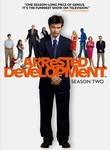
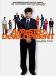

Arrested Development



Stephen Klancher: June 20, 2018
Stephen Klancher: June 20, 2018
Stephen Klancher: June 21, 2018
Stephen Klancher: June 23, 2018
Arrested Development Stephen Klancher: June 20, 2018 Stephen Klancher: June 20, 2018 Stephen Klancher: June 21, 2018 Stephen Klancher: June 23, 2018 Watched an episode not known by IMDb? |